2次元データのグラフでfacet_grid
y軸を固定してx軸を変える
見やすく
初手に GGally::ggpairs もGOOD
変数が多いと見辛い

ggplot2が沢山並んでるのでチラ見してみてネ (オープンアクセス)
Yasumoto et al. develop a new chemical mapping technique that relates mineral-scale compositions (obtained from EMPA) to whole rock compositions. Their model, called QntMap, is applied to a mineralogically layered UHP eclogite (Nové Dvory) from the Czech Republic, previously interpreted as a high-pressure cumulate. Their map of a 3 cm2 area, however, shows that in moving from the garnet- to the pyroxene-rich layer, Cr and Mg# increase in both garnet and pyroxene phases. They conclude that this disequilibrium feature results from a melt (the pyroxenite layer) that was injected into a garnet-rich UHP host. The potential reach goes much further. This research could serve as an excellent tool to evaluate hypotheses of granite emplacement or so-considered fluid-driven alteration within a myriad of settings.
私のggplot2力はこの論文に鍛えられた
## 'data.frame': 32 obs. of 11 variables:
## $ mpg : num 21 21 22.8 21.4 18.7 18.1 14.3 24.4 22.8 19.2 ...
## $ cyl : num 6 6 4 6 8 6 8 4 4 6 ...
## $ disp: num 160 160 108 258 360 ...
## $ hp : num 110 110 93 110 175 105 245 62 95 123 ...
## $ drat: num 3.9 3.9 3.85 3.08 3.15 2.76 3.21 3.69 3.92 3.92 ...
## $ wt : num 2.62 2.88 2.32 3.21 3.44 ...
## $ qsec: num 16.5 17 18.6 19.4 17 ...
## $ vs : num 0 0 1 1 0 1 0 1 1 1 ...
## $ am : num 1 1 1 0 0 0 0 0 0 0 ...
## $ gear: num 4 4 4 3 3 3 3 4 4 4 ...
## $ carb: num 4 4 1 1 2 1 4 2 2 4 ...(Henderson and Velleman, 1981)
?mtcars によるとlibrary(tidyr)
longcars <- gather(minicars, var, val, -am, -vs, -mpg)
# wt列とhp列がの列名がvar列の値に、それぞれの値がval列に入るminicars
| mpg | wt | hp | vs | am |
|---|---|---|---|---|
| 21.0 | 2.620 | 110 | V-shaped | Manual |
| 21.0 | 2.875 | 110 | V-shaped | Manual |
| 22.8 | 2.320 | 93 | Straight | Manual |
| 21.4 | 3.215 | 110 | Straight | Automatic |
longcars
| mpg | vs | am | var | val |
|---|---|---|---|---|
| 21.0 | V-shaped | Manual | wt | 2.620 |
| 21.0 | V-shaped | Manual | wt | 2.875 |
| 22.8 | Straight | Manual | wt | 2.320 |
| 21.4 | Straight | Automatic | wt | 3.215 |
| 21.0 | V-shaped | Manual | hp | 110.000 |
| 21.0 | V-shaped | Manual | hp | 110.000 |
| 22.8 | Straight | Manual | hp | 93.000 |
| 21.4 | Straight | Automatic | hp | 110.000 |
各列の名前をkey列の値に、値をval列にまとめる。
-列名 で、gatherしない変数を指定できる。
spread で戻せる。
wide format
spread(long, key, value)
| a | x1 | x2 |
|---|---|---|
| a | 1 | 3 |
| b | 2 | 4 |
long format
gather(wide, key, value, -a)
| a | key | value |
|---|---|---|
| a | x1 | 1 |
| b | x1 | 2 |
| a | x2 | 3 |
| b | x2 | 4 |
library(summarytools)
longcars %>%
dfSummary(
graph.col = FALSE, varnumbers = FALSE, valid.col = FALSE, omit.heading = TRUE
) %>%
view(method = 'render', report.title = NA, footnote = NA)| Variable | Stats / Values | Freqs (% of Valid) | Missing |
|---|---|---|---|
| mpg [numeric] | mean (sd) : 20.09 (5.98) min < med < max : 10.4 < 19.2 < 33.9 IQR (CV) : 7.38 (0.3) | 25 distinct values | 0 (0%) |
| vs [character] | 1. Straight 2. V-shaped | 28 (43.8%) 36 (56.2%) | 0 (0%) |
| am [character] | 1. Automatic 2. Manual | 38 (59.4%) 26 (40.6%) | 0 (0%) |
| var [character] | 1. hp 2. wt | 32 (50.0%) 32 (50.0%) | 0 (0%) |
| val [numeric] | mean (sd) : 74.95 (86.84) min < med < max : 1.51 < 28.71 < 335 IQR (CV) : 119.62 (1.16) | 51 distinct values | 0 (0%) |
ggplot(minicars, aes(x = wt, y = mpg, color = vs)) +
geom_point() # 散布図を描写
# `data` と `mapping`の引数名は省略することが多い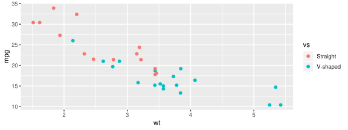
theme_classic()theme_gray()?theme 参照……。
facet_grid ggplot(minicars, aes(x = wt, y = mpg)) + geom_point() +
facet_grid(vs ~ am) # or facet_grid(rows = vars(vs), cols = vars(am))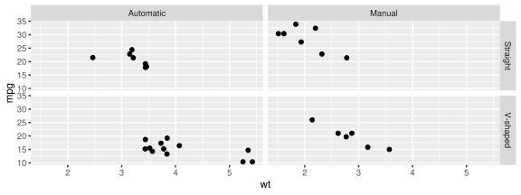
V型エンジンのMT車はどれ？
ggplot(minicars, aes(x = wt, y = mpg)) + geom_point() +
facet_grid(. ~ vs + am) # or facet_grid(cols = vars(vs, am))行内・列内で複数の変数を使った分割も可能
facet_gridscales = 'free_x' でx軸の範囲を可変にlast_plot() + facet_grid(vs ~ var, scales = 'free_x')
# scalesは'fixed' (規定値), 'free_x', 'free_y', 'free'のいずれか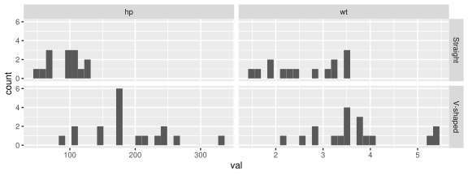
直列型はV型より低馬力で軽量
switch = 'both'GGally::ggpairs もGOOD
dir = 'v')nrow 引数で行数を制御ncol 引数で列数を制御変数が多いとfacet_gridは辛い
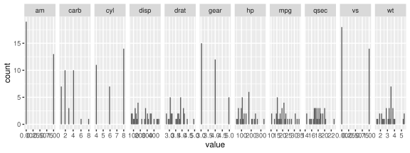
ggplot(longcars, aes(x = val, y = mpg, colour = am, shape = vs)) +
geom_point(size = 4) +
facet_wrap( ~ var, scales = 'free', strip.position = 'bottom') +
theme_classic() +
theme(
strip.placement = 'outside',
strip.background = element_blank(),
strip.text.x = element_text(size = 11),
axis.title.x = element_blank()
)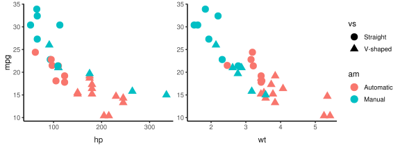
as.table = FALSE)facetする変数をfactor型にすると、levels順になる。
factorの操作にはforcats パッケージが便利 (参考: ぞうさんの記事)
library(forcats)
minicars2 <- minicars %>%
mutate(vs = forcats::fct_relevel(vs, 'V-shaped'))
ggplot(minicars2, aes(mpg)) +
geom_histogram() +
facet_wrap(~ vs, ncol = 1)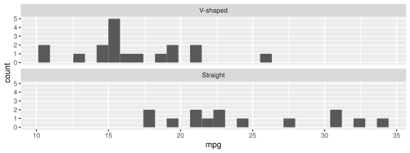
Tip: 凡例などの順序もfactorで制御できる
facetする変数を予め整形しておく
margins = TRUE)facet_grid 専用
margins = TRUE)審美的属性にも使う変数でfacetする場合は、
その変数のコピーでfacetする
facet_grid でも facet_wrap でも使える
minicars %>%
transmute(mpg, hist = 1, dens = NA_integer_) %>%
bind_rows(mutate(., hist = NA_integer_, dens = 1)) %>%
mutate(facet = ifelse(!is.na(hist), 'count', 'density')) %>%
ggplot(aes(x = mpg)) +
geom_histogram(aes(x = mpg * hist)) +
geom_density(aes(x = mpg * dens)) +
facet_wrap(~ facet, scales = 'free_y', strip.position = 'left') +
theme(
axis.title.y = element_blank(),
strip.placement = 'outside',
strip.background = element_blank(),
strip.text.y = element_text(size = 11)
)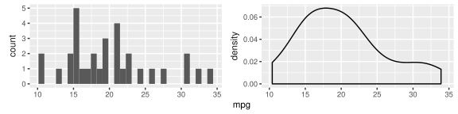
facet_grid と facet_wrap の引数| 目的 | facet_grid | facet_wrap |
|---|---|---|
| facetする変数を指定 | rows, cols, |
facets |
| 行数・列数を変える | nrow, ncol | |
| 軸の範囲を可変にする | scales, shrink | scales, shrink |
| 図の表示サイズを可変にする | space | |
| stripの位置を変更 | switch | strip.position |
| stripの文字列を変更 | labeller | labeller |
| stripの並べ方を変更 | as.table | as.table, dir |
| factorでfacetした時データに 含まれない水準を表示する | drop | drop |
| 分割前の図も並べる | margins |
赤字 は未紹介・ 打ち消し は Deprecated
patchwork で自由に図を並べる
https://github.com/thomasp85/patchwork
二項演算子を利用して、
ggplot2で作った図を簡単に 継ぎ接ぎ できるパッケージ
参考記事 by かつどんさん (@nozma)
patchworkのREADME邦訳+α
patchwork以外の選択肢
|で図を横に並べるp1 <- ggplot(minicars) + geom_point(aes(wt, mpg)) + ggtitle('p1')
p2 <- ggplot(minicars) + geom_point(aes(hp, mpg)) + ggtitle('p2')
p3 <- ggplot(minicars) + geom_histogram(aes(wt)) + ggtitle('p3')
p4 <- ggplot(minicars) + geom_histogram(aes(mpg)) + coord_flip() + ggtitle('p4')
p1 | p2 | p3 | p4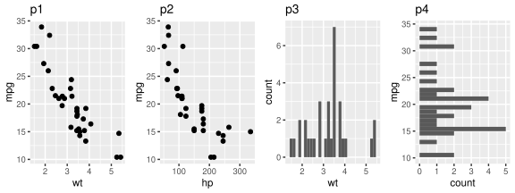
/で図を縦に並べる()でネストするplot_spacer()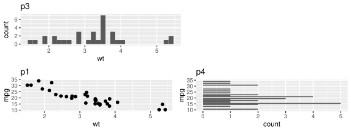
もうちょっと良いスペーサーが欲しい (xx)
周辺分布なら ggExtra::ggMarginal
wrap_plots()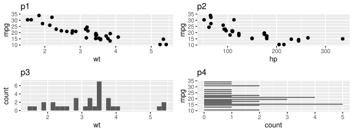
wrap_plots()行数や列数、行の高さの比、列の幅の比なども弄れる
|, /, wrap_plots は組み合わせ可能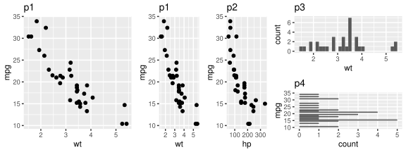
plot_annotation()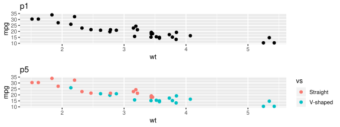
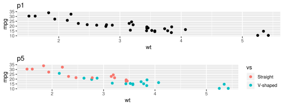
| データ | 図の種類 | 並べかた | 軸の表示 | |
|---|---|---|---|---|
| facet_grid | 同じ | 同じ | 表形式 | 端のみ |
| facet_wrap | 同じ | 同じ | 改行 | scales引数次第 |
| patchwork | 自由 | 自由 | 自由 | 全て |